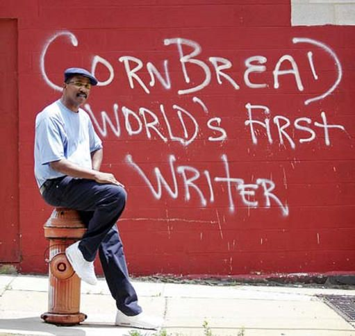
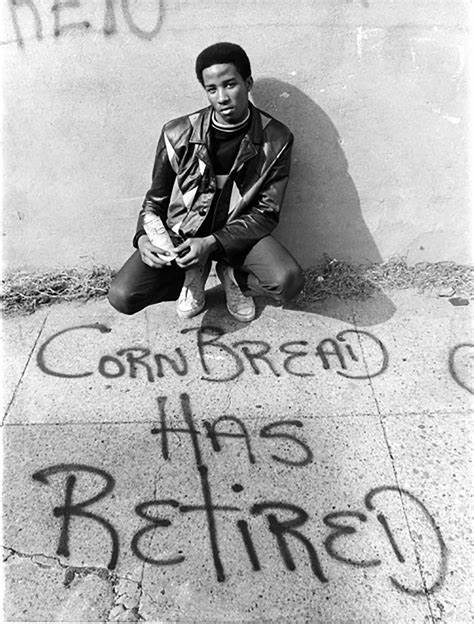
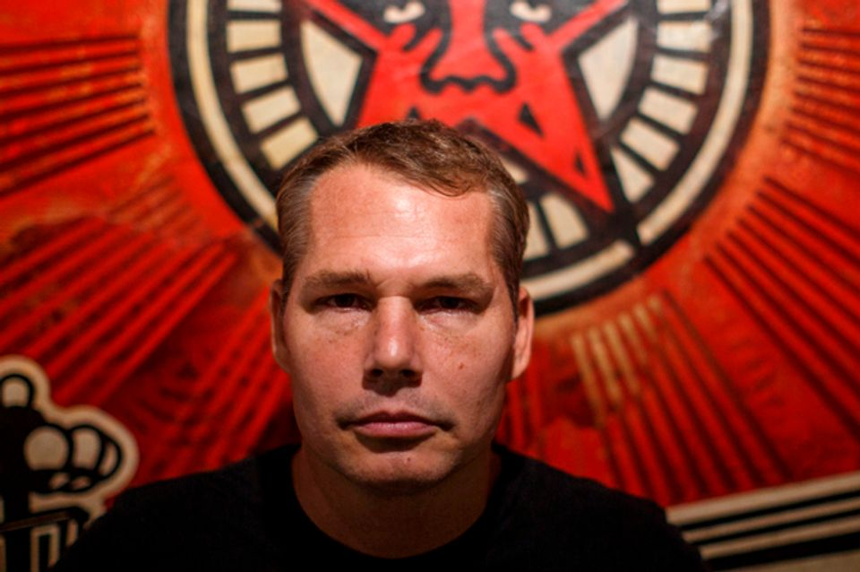

street art
Cornbread, de son vrai nom Darryl McCray, est considéré comme l’un des pionniers du graffiti moderne et une véritable légende du street art. Né à Philadelphie dans les années 1950, il a commencé à taguer son surnom “Cornbread” dans les rues de sa ville natale à la fin des années 1960. Sa motivation initiale était de conquérir le cœur d’une fille qu’il admirait, mais son activité est rapidement devenue un moyen d’expression artistique et sociale. Cornbread a été l’un des premiers à inscrire son nom dans des endroits insolites et inattendus, marquant ainsi le début de la culture du graffiti en tant que mouvement urbain. Aujourd’hui, il est reconnu comme un précurseur ayant ouvert la voie à des générations d’artistes de rue à travers le monde.
OEUVRES
 shepard Fairey
Shepard Fairey est un artiste américain de street art, graphiste et activiste, célèbre pour son style mêlant pop art, propagande politique et imagerie publicitaire. Il s’est fait connaître mondialement avec l’affiche “HOPE” de Barack Obama en 2008, devenue un symbole de la campagne présidentielle. Fondateur de la marque OBEY, il utilise des couleurs vives et des messages percutants pour aborder des thématiques sociales et politiques telles que la justice, les droits humains et l’environnement. Son travail a eu un impact majeur sur la culture urbaine et le design graphique contemporain.